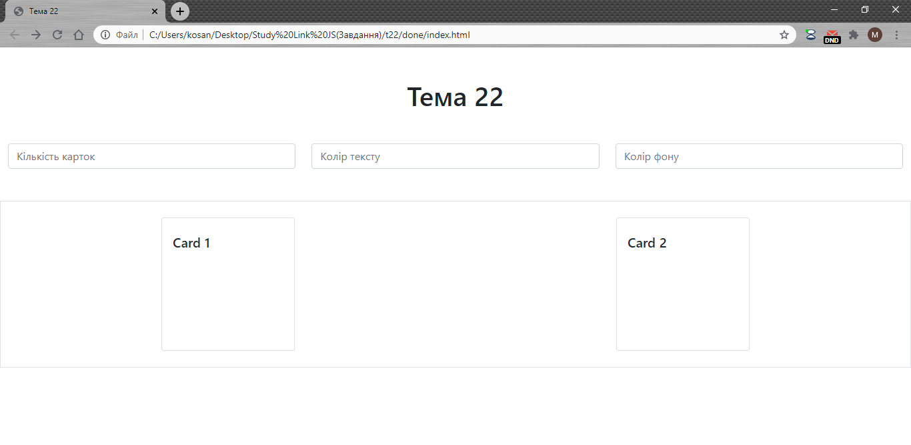
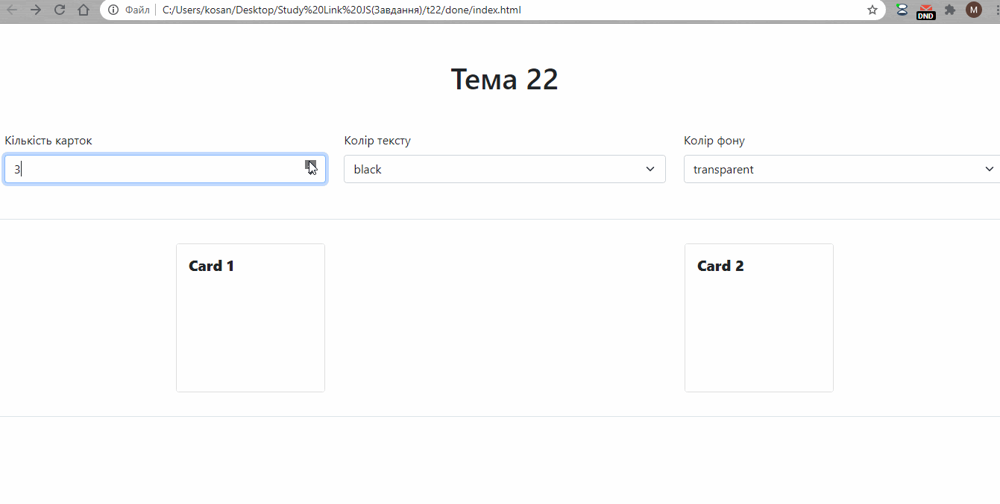

Тема 22
1. Використайте готову верстку для завдання: index.html.

2. Додайте да допомогою JavaScript ту кількість карток яка буде вказана у відповідному полі для введення.
4. Змінюйте стилі карток відповідно до вказаних значень у формі. Виконайте завдання двома способами за допомогою атрибуту style та за допомогою додавання стилів.

4. Додайте поле для введення порядку для зміни карток. Після зміни чила n - кожна n картка буде змінювати свої стилі, а всі інші ні.
5. Додайте кнопку якa очишуватиме стилі карток та кнопку яка видалятиме всі картки зі сторінки.